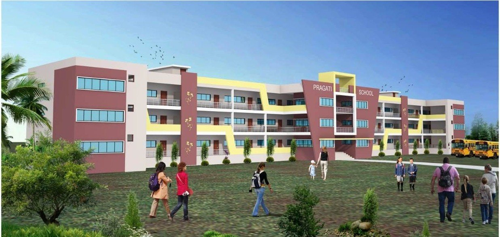

For Class X (SSLC) students. Fill in the online application, submit it to the college, and print your acknowledgement slip.
Pre-University Science with regular NEET, JEE and K-CET classes, so a rural student can compete for the best engineering and medical colleges in the state.
Admission enquiryAcademic PerformancePGTSE 2027 · Class X📝 Online ExamPragathi P.U. College stands in the green, quiet outskirts of Gurumatkal in Yadgir District, Karnataka — a centre for focused study, away from the noise of a city.
The college was started in the academic year 2022–23 by Deccan Education Society (R.), which has been running since 2004. Its students have posted taluka ranks in the II PUC Science examination in every recent year.
Teaching combines the Pre-University syllabus with regular NEET, JEE and K-CET classes. Our aim is simple: a student from a village should be able to compete for the best engineering and medical colleges in the state.
The campus is planned as a calm place for hard work. Pragathi does not stop at the syllabus; it offers a path toward a career and invites every family to that journey.

II PUC SCIENCE (PCMB) — THREE YEARS RESULT HIGHLIGHTS & TOPPERS
Students joining Pragathi P.U. College from different high schools—even with modest or low SSLC scores—consistently improve and score higher in II PUC Science through focused mentoring.
| College name | Pragathi P.U. College (ಪ್ರಗತಿ ಪದವಿ ಪೂರ್ವ ಕಾಲೇಜು) |
| College code | KY0434 |
| Managed by | Deccan Education Society (R.), est. 2004 |
| College started | 2022–23 |
| Affiliation | Department of Pre-University Education, Karnataka |
| Courses | I PUC and II PUC Science (PCMB: Physics, Chemistry, Mathematics, Biology) |
| Languages | Kannada, English, Hindi, Urdu |
| Address | Near Yashodha Petroleums, Hyderabad Road, Gurumatkal, Dist. Yadgir, Karnataka — 585214 |
Fill in the details and send the enquiry on WhatsApp to the college office. We will call you back.
Near Yashodha Petroleums, Hyderabad Road, Gurumatkal, Dist. Yadgir, Karnataka — 585214
Email: pragathipugkl434@gmail.com
Get directions